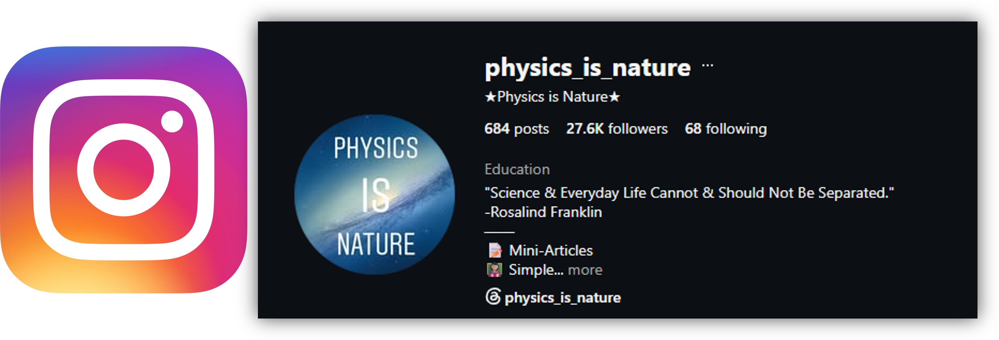

Physics Is Nature – Instagram Page
Aims of the page:
• Deliver and simplify physics ideas, methods, theories and facts.
• Show the intimate relation between physics as a science and natural phenomena.
• Highlight the importance of physics to society today, particularly through our reliance on technology and the many technologies that are continually transforming our world and can be directly traced back to important physics research.
Instagram:
www.instagram.com/physics_is_nature